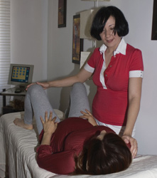
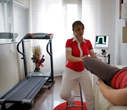

Che cos’è la rieducazione e riabilitazione del pavimento pelvico
Benessere e movimento sono concetti spesso abbinati in quanto la qualità

del movimento è direttamente proporzionale al benessere.
A differenza della chirurgia o della farmacologia, l'esercizio praticato attraverso le tecniche riabilitative “parla” alla persona nella sua interezza, non limitandosi all'organo da correggere, ma allenando mente e corpo così da accrescere non solo il benessere fisico, ma anche il rilassamento mentale.
Imprescindibile nella pratica della riabilitazione è il controllo del respiro, attraverso il quale è possibile raggiungere anche uno stato di armonia interiore.
Gli esercizi possono essere effettuati a corpo libero o con l'ausilio di apparecchiature, ma i principi fondamentali restano invariati:
- la respirazione controllata che aiuta ad eseguire gli esercizi nella maniera corretta;
- la concentrazione, poiché la mente deve riconoscere e guidare ogni singolo muscolo del pavimento pelvico;
- la precisione che deve caratterizzare i movimenti per ottenere il massimo risultato dall’esercizio;
- il controllo dal momento che nessun movimento deve essere fatto in maniera avventata;
- l’armonia che nasce dalla padronanza e dall’unione di tutti gli elementi precedenti.
Le funzioni degli apparati
uro-ginecologico ed ano-rettale, sono collegati fra loro per le complesse “implicazioni” anatomiche, psicologiche e comportamentali, tanto che alcune disfunzioni che coinvolgono un apparato possono coinvolgere l’altro.
La rieducazione e riabilitazione del

pavimento pelvico permette di curare o/e migliorare i disturbi pelvi-perineali in un approccio terapeutico completo e personalizzato sotto un’ottica di
integrazione, ove l’elemento centrale è
la persona non solo come oggetto di trattamento che subisce passivamente, ma come soggetto a cui viene spiegato lo scopo del trattamento, le motivazioni, gli obiettivi per incamminarsi con l’infermiere “trainer pelvico” verso una risoluzione totale dei sintomi.
Il centro Pelvic Gym si occupa della cura, prevenzione e trattamento delle disfunzioni del pavimento pelvico attraverso la rieducazione e riabilitazione pelvi-perineale con metodiche combinate: chinesiterapia, elettroterapia e biofeedback, e terapie manuali.
La rieducazione e la riabilitazione del pavimento pelvico sono un insieme di tecniche il cui scopo è quello di migliorare la sensibilità, la coordinazione, la contrazione e la “durata” dei muscoli perineali (zona compresa tra l’ano ed i genitali) di sostegno alla vescica, all’utero e al retto-ano.
Queste tecniche riguardano in particolare la cura e la prevenzione dell’incontinenza fecale ed urinaria, della stipsi da sforzo, del prolasso urogenitale, dei disturbi della sfera sessuale e del dolore cronico pelvico.